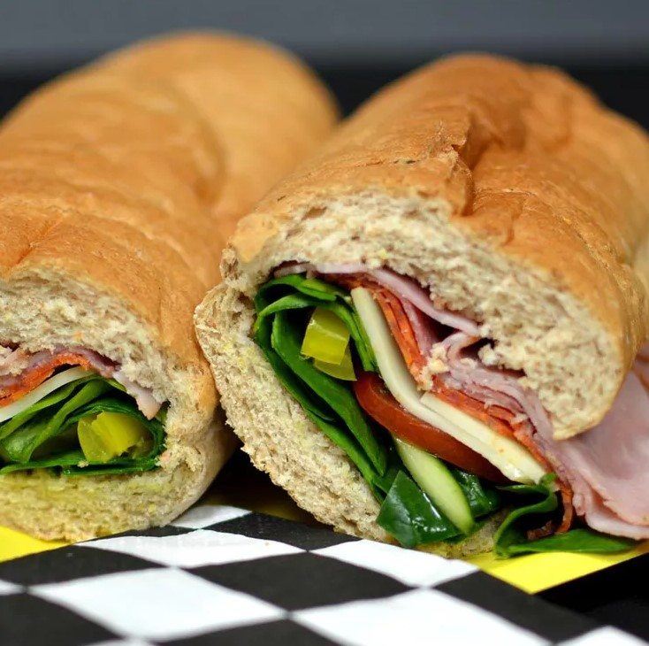

Italian Subs

Description
This recipe is a classic Italian sandwich sub with three kinds of meat and provolone cheese, reminiscent of one you would find in a local Italian deli. Perfect for lunch or dinner!
Ingredients
- 1 head red leaf lettuce, rinsed and torn
- 2 medium fresh tomatoes, chopped
- 1 medium red onion, chopped
- 6 tbsp olive oil
- 2 tbsp white wine vinegar
- 2 tbsp chopped fresh parsley
- 2 cloves garlic, chopped
- 1 tsp dried basil
- 1/4 tsp red pepper flakes
- 1 pinch dried oregano
- 1/2 lb sliced Capacola sausage
- 1/2 lb thinly sliced Genoa salami
- 1/4 lb thinly sliced prosciutto
- 1/2 lb sliced provolone cheese
- 4 sub rolls, split
- 1 cup dill pickle slices
Steps
- Combine lettuce, tomatoes, and onion in a large bowl.
- Whisk together olive oil, vinegar, parsley, garlic, basil, red pepper flakes, and oregano in a medium bowl until well combined. Pour over salad and toss to coat evenly. Place in the refrigerator for flavors to meld, about 1 hour.
- Spread submarine rolls open, then layer capicola, salami, and prosciutto evenly on each roll. Top with provolone cheese. Cover with salad and pickle slices. Close rolls to serve.